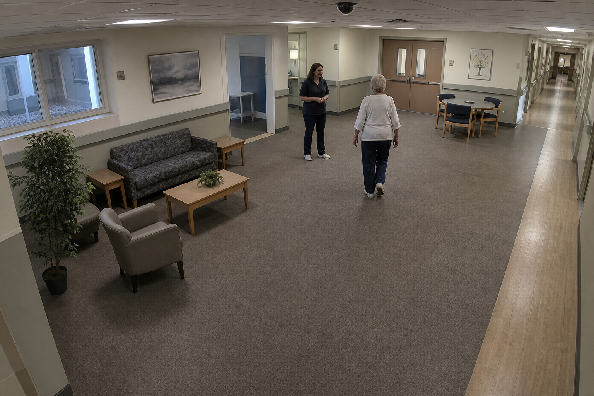

Interactive simulation of the pipeline from vision-based-patient-monitoring-system — YOLOv8 + DeepSORT tracking and MobileNetV2 + GRU for fall detection.
Sample CCTV-style frames illustrate fall detection output. The full model runs in the GitHub notebooks with GPU inference.

Fall detection examples — click to view
The full system also detects violent or abnormal behavior using MobileNetV2 + LSTM on a custom AIRTLab dataset (350 train / 70 test samples). When triggered, alerts are sent via the Twilio API with patient ID and event type — same pipeline as fall detection, after YOLOv8 person detection and DeepSORT tracking.
Reported results: 82.86% accuracy, 0.885 AUC, and 1.00 recall on the violent/abnormal class.